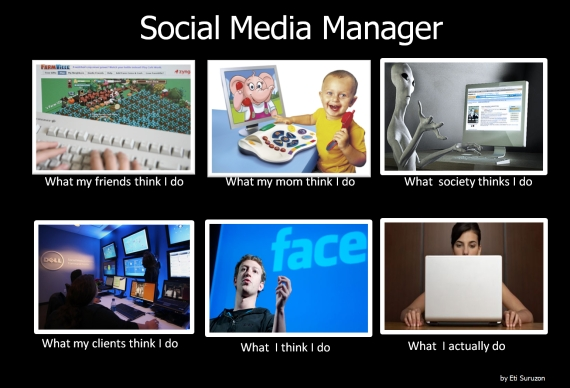
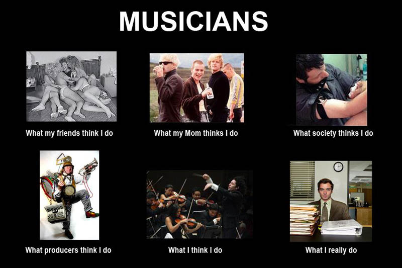
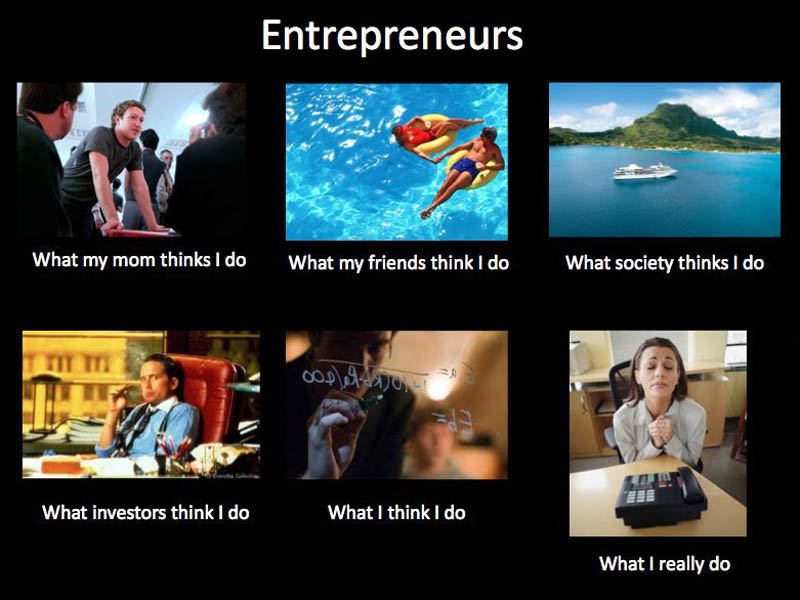
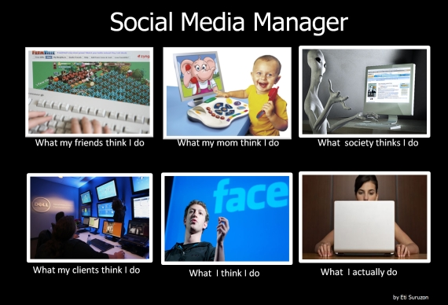
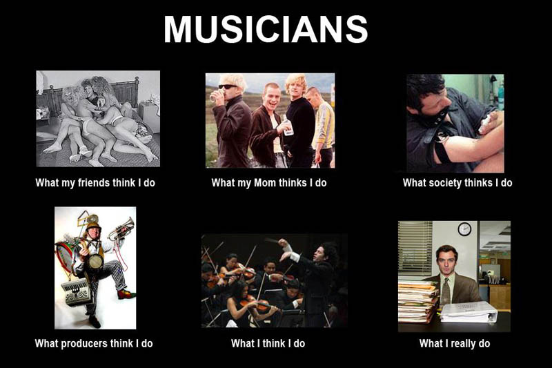
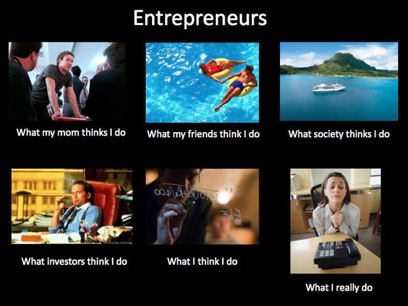
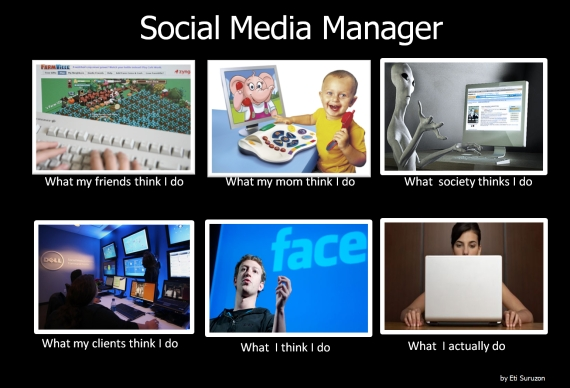
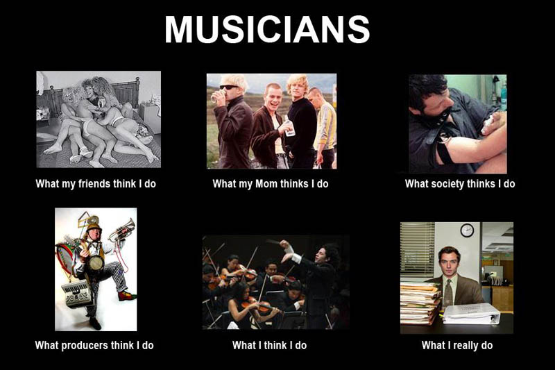
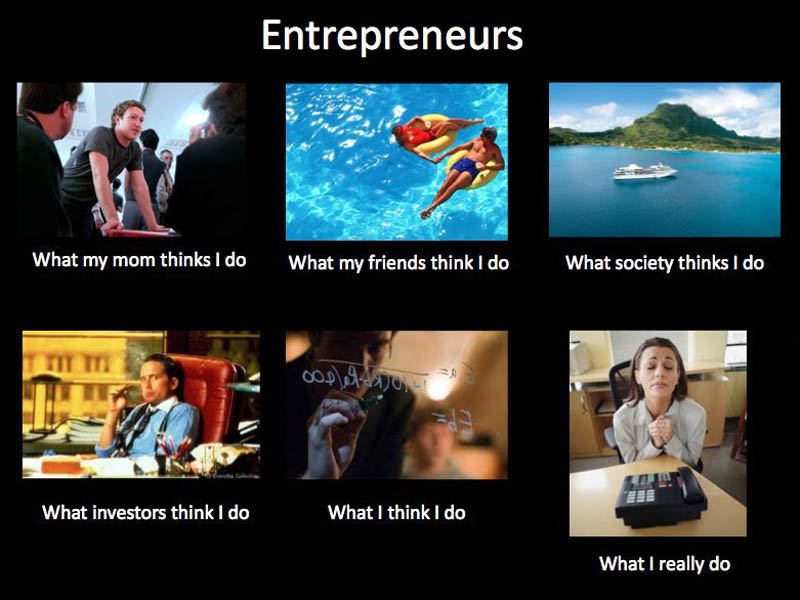
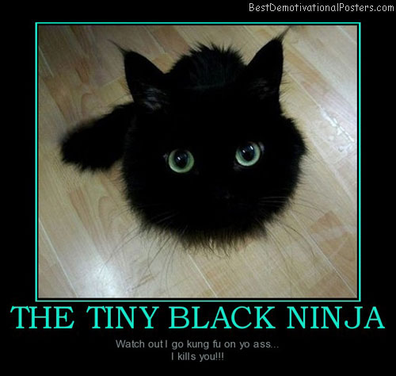

You could be anyone, or anything online. People have been able to create false identities to lure people into traps. The world is not safe. No one is. One can live an entirely different online life than the one they actually lead. Social media disrupts one's self image. What one appears to be can be skewed by the others. Online chat rooms are never secure. Especially Omegle. Talking to strangers may yield secret information never previously mentioned before. Out of all your 12390739057097 friends on Facebook, you probably don't talk to 12390739056997 of them. You don't know who they are. In the online world, no one becomes someone. Do you like that? Let us know.



Stalkers will find you online sooner or later. People you least expect. They secretly develop an obsession for your perceived image, but have no confidence to go up to you. They just might get to you when you least expect it. And then there will no cops to call. You will disappear without a trace. To no one you shall return.

But today, you will be someone of great importance. You will be worth stalking, by others around the world. Today, you assume the role of the President Of The United States. You swear to uphold the Constitution. You swear to defend the freedoms, and the openness our soldiers fight to stand for. Yet, you use clandestine methods to force the world to see your ends. Who you are is truly a mystery to the American People.